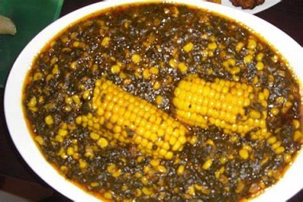

BIENVENUE AU CENTRE CAMEROUN
Les sites touristiques
La region du Centre est dotée d'une panoplie de sites touristiques parmi lesquels nous avons:
La culture au CENTRE CAMEROUN
La Région du Centre est composée d’une pluralité d’ethnies : le groupe bantou fang-beti de coutume similaire et de langue commune et d’autres ethnies que sont les ewondo, yezum, yebekolo, mbida-mbanie, les mvog-nyenge, les eton, les manguissa, les bamvele, les batchenga (tsinga), les evuzok, les onvang, les yekaba et yetudé.
| Peuples du centre | Langues parlées |
|---|---|
| Bafia | Bafia |
| Eton | eton |
| Ewondo | Ewondo |
| Mbo'o | mboo |
Gastronomie
On retrouve plusieurs mets traditionnels dans la region du centre tels que:l'OKOK,le KWEM,le SANGA

BIENVENUE A L'OUEST CAMEROUN
Les sites touristiques
La region de l'Ouest est dotée d'une panoplie de sites touristiques parmi lesquels nous avons:

La culture à l'Ouest Cameroun
La Région de l'ouest est composée d’une pluralité d’ethnies : les bamouns, les bamileke, les tikar
Gastronomie
On retrouve plusieurs mets traditionnels dans la region du centre tels que:le Nkui,le Ndjapche,le Kondre, le Koky

BIENVENUE AU LITTORAL CAMEROUN
Les sites touristiques
La region du LITTORAL est dotée d'une panoplie de sites touristiques parmi lesquels nous avons:
La culture au Littoral CAMEROUN
Les Sawa sont un ensemble d’ethnies bantoues installées sur le littoral camerounais, et dans les régions environnantes. Cela inclut des ethnies dans les régions administratives sur Littoral, du Sud, et du Sud-Ouest 12. Les Sawa sont concentrés principalement sur les régions du Littoral et du Sud-Ouest du Cameroun. Les Sawa regroupent les populations suivantes: Moungo (Nkongsamba), Wouri (Douala), Nkam (Yabassi), Sanaga-Maritime (Edéa), Manyu (Mamfé), Koupe-Manengouba (Bangem), Fako (Limbé), Ndian (Mundemba), Océan (Kribi) et Meme (Kumba) 1.
Gastronomie
On retrouve plusieurs mets traditionnels dans la region du centre tels que:le NDOLE,le MBONGO TCHOBI